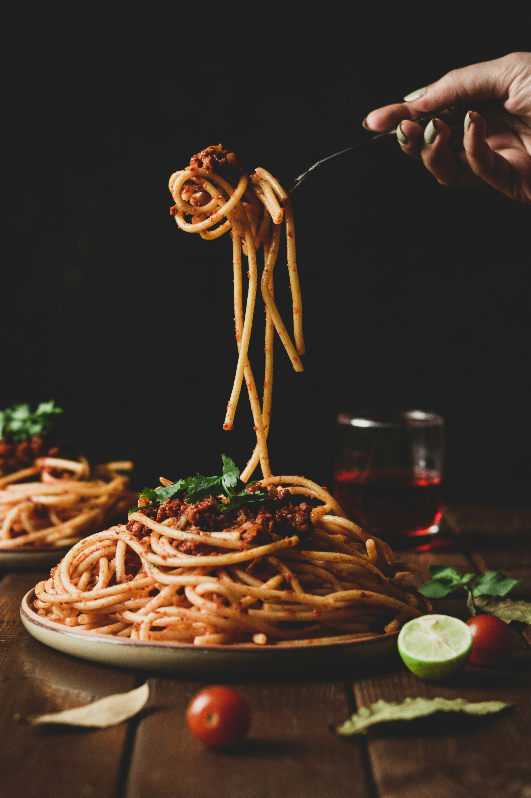

Creamy Garlic Pasta

Introduction
Creamy Garlic Pasta is a simple, delicious and comforting meal that is perfect for lunch or dinner. It combines soft pasta with a creamy garlic sauce to create a flavorful meal that everyone can enjoy.
Ingredients
- 200g pasta
- 2 tablespoons butter
- 3 cloves garlic, minced
- 1 cup cooking cream
- 1/2 cup grated cheese
- Salt to taste
- Black pepper to taste
- Fresh parsley for garnish
Preparation
Cook the pasta according to the package instructions until tender. Drain the pasta and keep it aside while preparing the creamy garlic sauce.
Cooking Steps
- Boil the pasta in salted water until it is tender.
- Melt the butter in a large pan over medium heat and add the minced garlic.
- Cook the garlic for a short time until it becomes fragrant.
- Add the cooking cream and stir gently until the sauce becomes creamy.
- Add grated cheese, salt and black pepper, then mix well.
- Add the cooked pasta to the sauce and stir until the pasta is completely coated.
- Garnish with fresh parsley and serve while warm.
Tips
For the best flavor, use fresh garlic and good-quality cheese. You can also add vegetables such as mushrooms or spinach to make the pasta more colorful and nutritious.